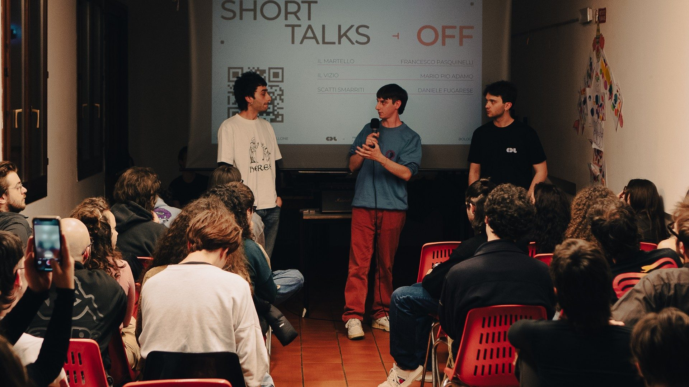
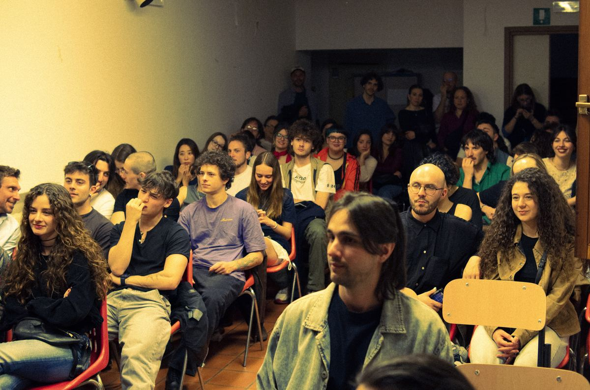
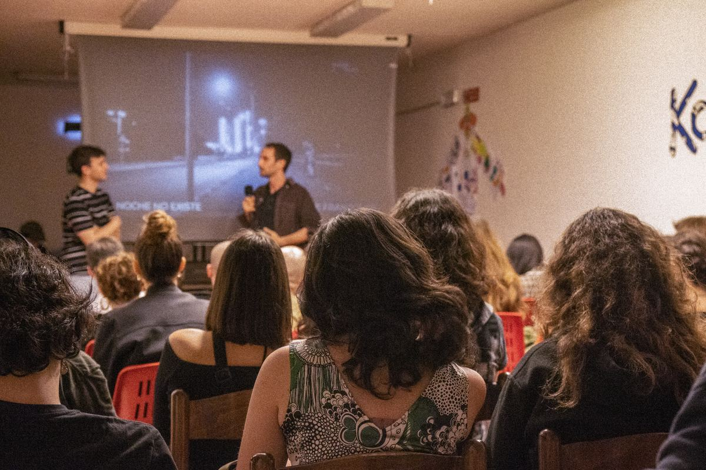
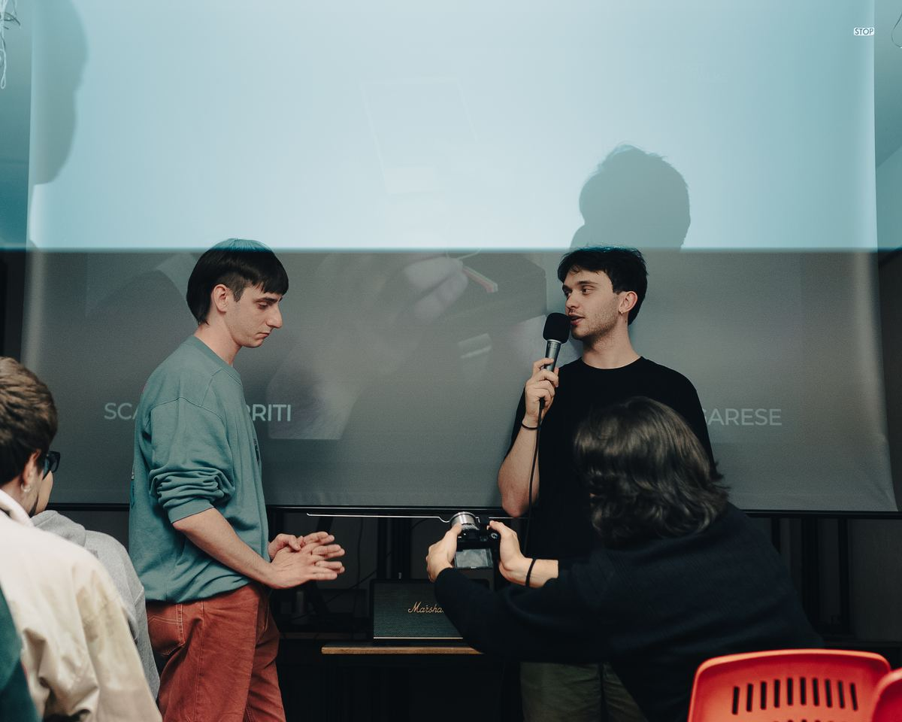
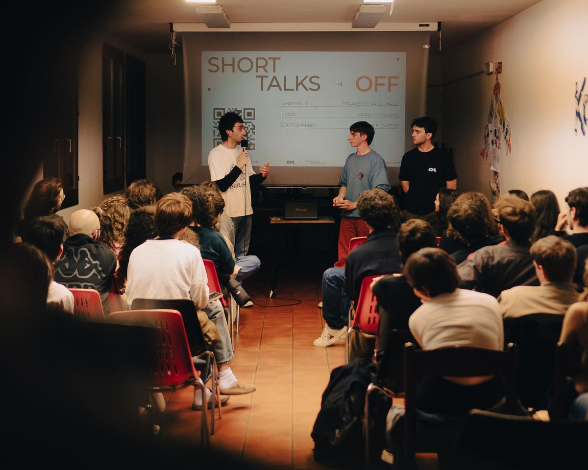
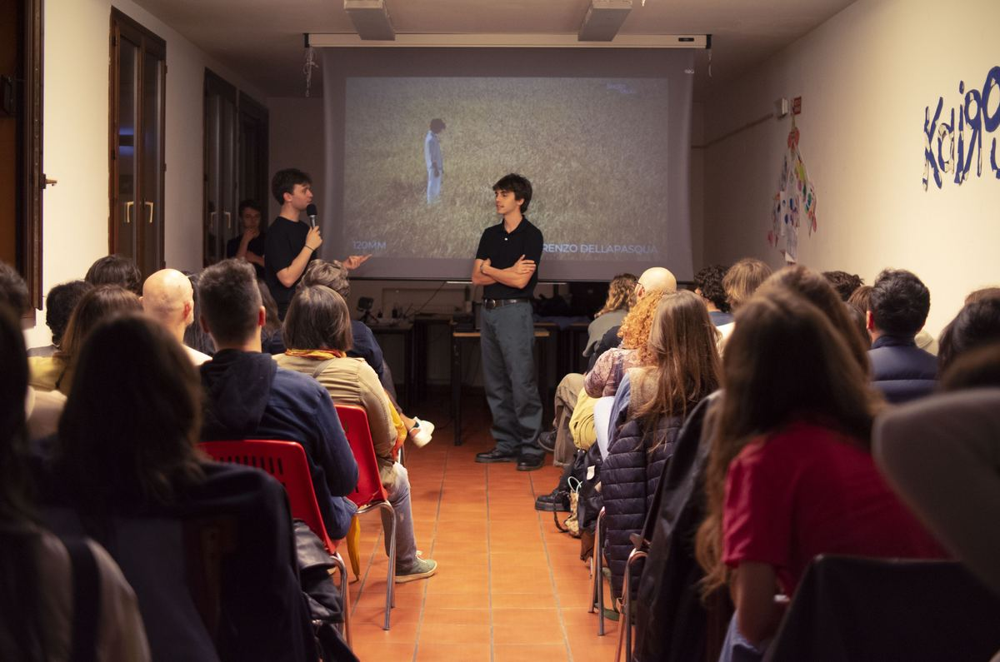

Short Talks OFF #1
Fra aprile e maggio 2025 Short Talks esce dal cinema che di solito lo ospita: nasce così Short Talks OFF, lo spin-off del format, con quattro appuntamenti al Centro Polifunzionale Il Pallone di Bologna.
Programma
Mercoledì 30 aprile
Musica: Bwude
-
La Media Mario Pio Adamo
-
I Sogni Vivono Solo di Notte Christian Dei
- Andrea Gabriele Rattini Nella Cortoteca
Giovedì 8 maggio
Con Sayonara Film e 50h in Barca · Musica: DJ Phil
-
Il Martello Francesco Pasquinelli · CDL
-
Il Vizio Mario Pio Adamo
-
Scatti Smarriti Daniele Fugarese
Giovedì 15 maggio
Musica: DJ Phil
-
蝴蝶 – La Farfalla Antonio Marsicano
- Lupara Verde Gabriele Rattini Nella Cortoteca
-
La Noche No Existe Simone Franzolini
Giovedì 22 maggio
Musica: Gatto
-
Agape Alessio Petrillo
-
120MM Lorenzo Dellapasqua
- Quarto Livello Francesco Pasquinelli · CDL Nella Cortoteca
Galleria





